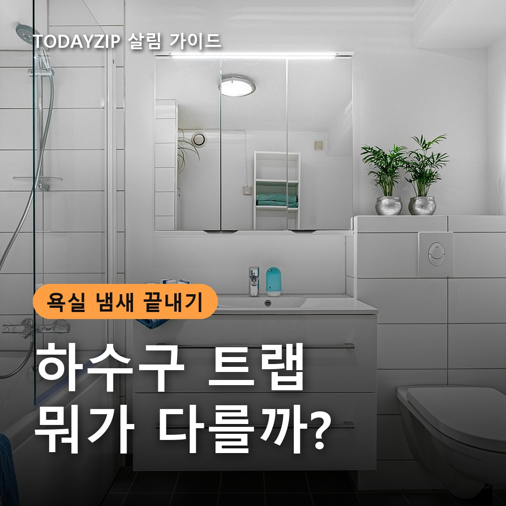
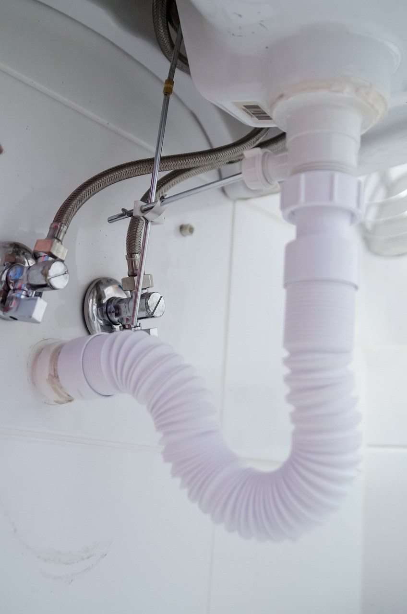
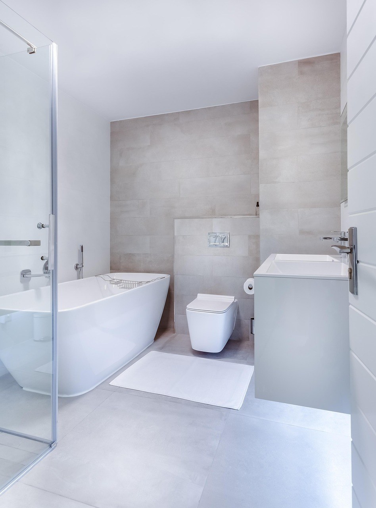
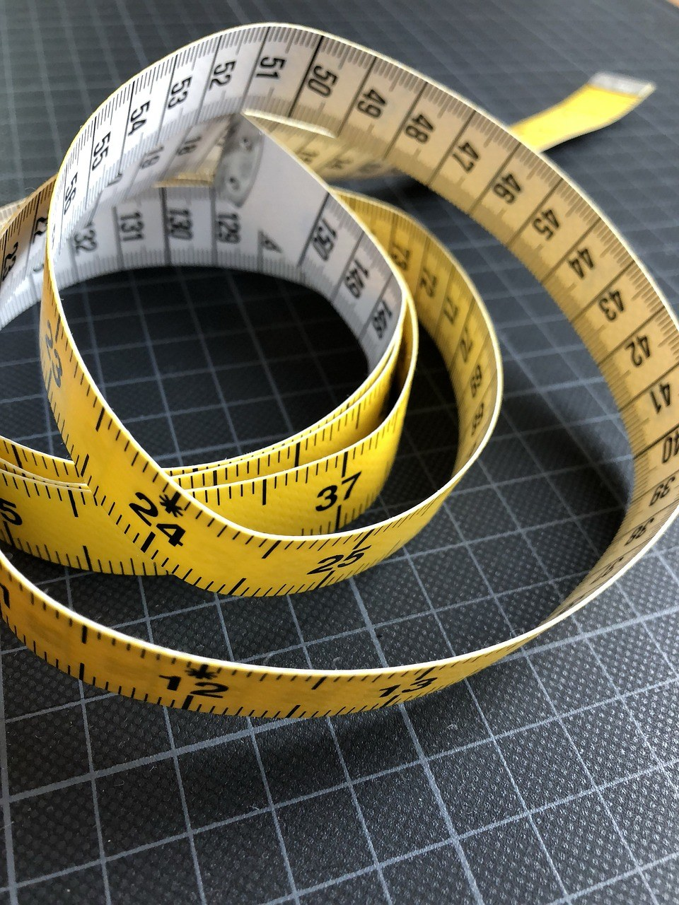
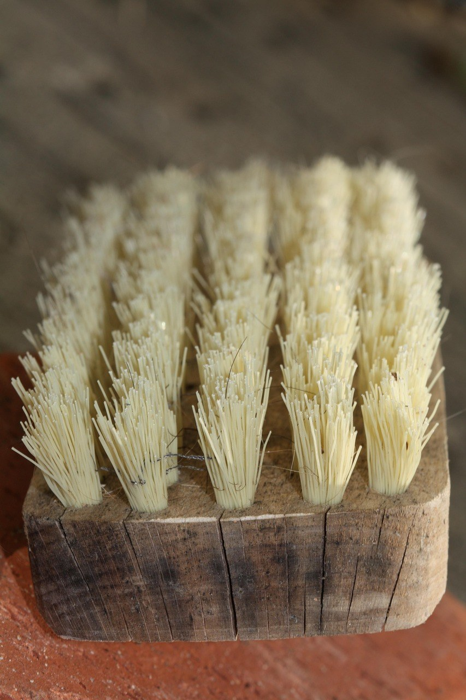

[사진 1: 썸네일]
샤워하고 나왔는데 욕실 바닥에서 퀴퀴한 하수구 냄새가 올라온 적 있으신가요? 청소해도 며칠 뒤 다시 냄새가 나고 날벌레까지 보이면 배수구에 뭔가를 끼워야 하나 고민하게 돼요.
이럴 때 많이 찾는 게 화장실 하수구 냄새 차단 트랩이에요. 오늘은 실리콘식·스프링식·자석식이 어떻게 다른지 결론부터 정리하고, 우리 집 배수구에 맞는 트랩을 고르는 법과 사기 전에 확인할 점을 알려 드릴게요.
[사진 2]
📷 [직접 찍은 사진 넣기: 욕실 배수구 덮개를 들어 올린 안쪽 모습 (물이 고여 있는지 보이게)]
욕실 배수구 아래에는 원래 물이 살짝 고이도록 꺾인 부분이 있어요. 이 물을 '봉수'라고 부르는데, 하수관 냄새와 벌레가 올라오지 못하게 막는 마개 역할을 해요.
오래 안 쓴 욕실이나 건조한 계절에는 이 물이 말라서 냄새가 나기도 해요. 이때는 물을 한 바가지 흘려 봉수를 채우는 것만으로 냄새가 줄 수 있어요. 반대로 머리카락과 비누 찌꺼기가 쌓여 생긴 냄새라면 트랩보다 청소가 먼저예요.
세 방식 모두 물이 흐를 때만 열리고 평소에는 닫혀 냄새를 막는 원리예요. 차이는 무엇으로 닫느냐에 있어요. 제품마다 구조가 달라서 아래는 일반적인 특징으로만 참고하세요.
| 구분 | 실리콘식 | 스프링식 | 자석식 |
|---|---|---|---|
| 닫는 방법 | 실리콘 날개가 오므라듦 | 스프링 힘으로 뚜껑이 닫힘 | 자석이 당겨 뚜껑이 닫힘 |
| 설치 | 끼우기만 하면 됨 | 끼우기·고정형 | 끼우기·고정형 |
| 물 빠짐 | 날개가 좁으면 느릴 수 있음 | 스프링이 세면 느릴 수 있음 | 적은 물에도 비교적 잘 열리는 편 |
| 관리 포인트 | 날개 사이 머리카락 | 스프링에 감긴 머리카락 | 자석 부분 물때 |
| 가격대 | 저렴한 편 | 중간 | 중간~조금 비싼 편 |
| 잘 맞는 곳 | 가끔 냄새 나는 욕실 | 벌레·냄새가 잦은 곳 | 물 빠짐이 신경 쓰이는 곳 |
[사진 3]
처음 써 본다면 부담 없는 실리콘식으로 시작해도 괜찮아요. 냄새가 가끔 나는 정도라면 설치도 쉽고 안 맞으면 빼면 되니까요.
날벌레가 자주 보이거나 냄새가 꾸준히 올라오는 집이라면 닫히는 힘이 분명한 스프링식이나 자석식을 많이 골라요. 샤워 때 물이 고이는 게 싫다면 적은 물에도 잘 열리는지, 상세 설명의 배수 구조를 먼저 보세요.
[사진 4]
📷 [직접 찍은 사진 넣기: 배수구 덮개를 뺀 자리의 안쪽 지름을 줄자로 재는 모습]
화장실 하수구 냄새 차단 트랩은 배수구 크기가 맞지 않으면 틈으로 냄새가 그대로 올라와요. 욕실 배수구 규격은 집마다 다르니 덮개를 빼고 안쪽 지름을 줄자로 재 보세요.
제품 설명에 맞는 지름이 적혀 있으니 잰 숫자와 꼭 비교하세요. 덮개가 사각인지 원형인지도 함께 확인하세요.
[사진 5]
트랩은 냄새가 올라오는 길을 막아 줄 뿐, 배수구 속 찌꺼기를 없애 주지는 않아요. 끼우기 전에 배수구 안쪽 머리카락과 물때를 한 번 청소해 두는 게 좋아요.
또 막힘이 있거나 물이 잘 안 빠지는 배수구에 닫는 힘이 센 트랩을 끼우면 물이 넘칠 수 있어요. 끼운 뒤 샤워를 해 보고 바닥에 물이 고이면 다른 방식으로 바꾸거나 배관 상태를 먼저 점검하세요.
Q. 트랩을 끼웠는데도 냄새가 나요.
A. 배수구 지름이 맞지 않아 틈이 있거나, 배수구 아래가 막혀 있을 수 있어요. 틈을 확인하고, 그래도 계속되면 배관 점검을 받아 보세요.
Q. 트랩은 얼마나 자주 청소하나요?
A. 머리카락이 걸리면 잘 닫히지 않으니 일주일에 한 번쯤 빼서 걸린 것을 떼어 내고 물로 헹궈 주면 좋아요.
Q. 세면대나 세탁기 배수구에도 같은 걸 써도 되나요?
A. 아니요. 세면대와 세탁기 배수구는 규격과 구조가 달라서 전용 제품을 따로 골라야 해요.
정리하면, 가끔 나는 냄새는 실리콘식, 벌레와 냄새가 잦으면 스프링식, 물 빠짐이 신경 쓰이면 자석식이에요. 어떤 방식이든 원인 확인과 배수구 지름 재기가 화장실 하수구 냄새 차단 트랩 고르는 법의 시작이에요.
여러분 집 욕실은 언제 냄새가 가장 심한가요? 효과 본 관리 방법이 있다면 댓글로 나눠 주세요.
인스타그램 @todayzip.info 에서 살림 꿀팁을 30초 영상으로도 볼 수 있어요.